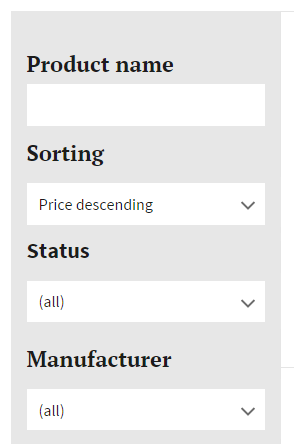
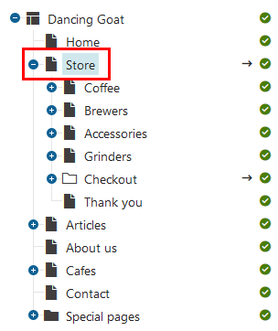
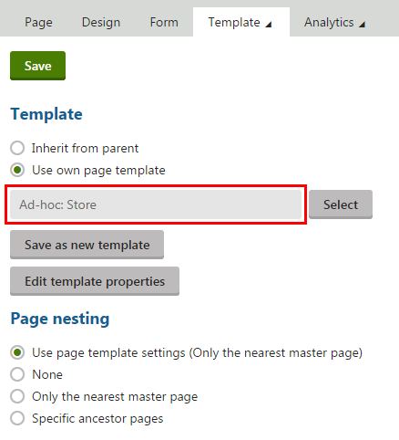

Configuring product listings with filtering
When displaying products on your site, you may want to provide product filters to your customers, i.e. so-called faceted search. For example, you may want to let your customers to filter products according to name, price ranges, stock availability, etc. You may also want your customers to be able to sort the products by their price.
In Kentico, you can create product filters using the smart search functionality.

Possible product filter appearance
Note: This page describes how to create product filters using locally stored search indexes and filters. Alternatively, you can set up advanced faceted navigation for products using Azure Search. To see an example, refer to Integrating Azure Search into pages.
To set up a product filter:
Decide whether you want to:
Filter products based on a text property – typically, you use text filtering when you want to provide filtering by name. For this type of filtering, you use a text box.
Filter products based on an option property – suitable, for example, when you want to filter the stock availability, a manufacturer or a product parameter. For this type of filtering, you can use checkboxes, drop-down lists, etc.
Preparing the index
Prepare the index for the filter to be able to search in the specific database columns. If the field is a general page or SKU field (e.g., page name, description, manufacturer), you need to set the fields in the Page class of the Pages module . On the other hand, if the field is a page type specific (e.g., the origin country of a coffee you sell that has its database column located in the Coffee page type), you need to set the fields in the specific page type. After preparing the index, do not forget to rebuild the index.
-
Configuring product listings with filtering
Preparing the index for a general page or SKU field
Open the Modules application.
Edit (
 ) the Pages module.
) the Pages module.Switch to the Classes tab.
Edit (
) the Page class.Switch to the Search tab.
Click Customize and confirm the dialog.
On the row with the desired field name, select options for the required columns.
The field names correspond with database columns. Configure the fields that you want to search in your filter (for example SKUName).
For fields that you want to use in a filter with text input, select the Content, Searchable and Tokenized options in the Local section of the grid.
For fields that you want to use as options in a filter, select the Searchable and Tokenized options in the Local section of the grid.
The Tokenized option is important for processing text containing spaces or other values that need to be broken into searchable tokens. You can leave the Tokenized option disabled for fields containing values without spaces.
Click Save.
The index now indexes and searches in the configured fields (database columns) as described in Defining local page indexes.
Preparing the index for a page type specific field
Open the Page types application.
Edit (
) the specific page type.Switch to the Search fields tab.
On the row with the desired field name, select the required columns.
The field names correspond with database columns. Configure the fields that you want to search in your filter (for example CoffeeFarm).
For fields that you want to use in a filter with text input, select the Content, Searchable and Tokenized options in the Local section of the grid.
For fields that you want to use as options in a filter, select the Searchable and Tokenized options in the Local section of the grid.
The Tokenized option is important for processing text containing spaces or other values that need to be broken into searchable tokens. You can leave the Tokenized option disabled for fields containing values without spaces.
Click Save.
The index now indexes and searches in the configured fields (database columns) as described in Defining local page indexes.
Rebuilding the index
You need to refresh the index to include the configured fields.
Open the Smart search application.
On the Local indexes tab, edit your search index.
Click Rebuild.
The index is now rebuilt and contains all the needed data.
Placing the filter web part
To place the filter on a page, place the Smart search filter web part on the page and enter its properties:
Open the Pages application and navigate to the main products page.

Navigating to the main page of productsIf you have not created any product structure yet, create a new page of the Page (menu item) page type in the Pages application.
On the Properties -> Template tab, if the template is not ad-hoc (the name is not in the form: "Ad-hoc: name of the page"), click Clone template as ad-hoc to create a template based on the template of the parent page.

Ad-hoc page template(Optional) If you want to modify the template of the page, click Edit template properties and in the Edit page template dialog, switch to the Layout tab.
See Managing page templates to learn more information about modifying page templates.
To display the field of the filter, place the Smart search filter web part on the Design tab.
Edit the properties of the Smart search filter according to your needs:
If you want to filter products based on a text, enter the following properties:
Field
Value
Filter mode
Text box
Values
Type the desired field name is the database column name in which the filter will search.
For example: DocumentName
Filter clause
Must
Field is conditional
Yes (selected)
If you want to filter products based on an option, enter the following properties:
Field
Value
Filter mode
Specify how the filter look like.
For example: Dropdown list
Filter auto postback
Specify whether the filter automatically reloads results when changed.
Values
Type the desired field name is the database column name in which the filter will search.
For example: DocumentName
Field is conditional
No (cleared)
Save & Close the web part properties dialog.
The system places the web part on the page and customers can filter your products (however, the results are not displayed anywhere yet).
Displaying the filter results
Open the Pages application and navigate to the main products page.
Navigating to the main page of productsIf you have not created any product structure yet, create a new page of the Page (menu item) page type in the Pages application.
On the Properties -> Template tab, if the template is not ad-hoc (the name is not in the form: "Ad-hoc: name of the page"), click Clone template as ad-hoc to create a template based on the template of the parent page.
Ad-hoc page template(Optional) If you want to modify the template of the page, click Edit template properties and in the Edit page template dialog, switch to the Layout tab.
See Managing page templates to learn more information about modifying page templates.
To display product data, place the Smart search results web part on the Design tab.
Edit the properties of the Smart search results according to your needs:
Field
Value
Web part control ID
Name the web part.
For example: SmartSearchProductList
Indexes
Select the index name used when deciding whether to product with a text or with an option.
For example: DancingGoat.Pages
Path
Type ./% to display all pages on levels in the product tree below the product listing page.
Page types
Select those page types which are then displayed.
Typically, select all product page types.
Search options
Specify what syntax the search recognize.
See Smart search syntax to learn more information.
Transformation
Select the transformation you created for the product listing pages.
For example: DancingGoat.Transformations.SmartSearchProductList
Save & Close the web part properties dialog.
Edit the Smart search filter web part which should display the filtered data in the just created Smart search results web part.
In the Search dialog web part ID field, type the name (web part control ID) of the Smart search results web part (for example, SmartSearchProductList).
Click Save & Close.
Repeat the steps 7–9 for every Smart search filter web part that displays the filtered data in the Smart search results web part.
The system places the web part on the page and customers can filter your products.
To add the product detail page, see Configuring product pages. To combine it with the product filter, leave the Transformation field empty and select only the Selected item transformation field.